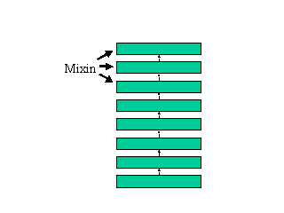
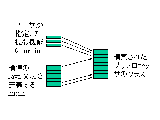
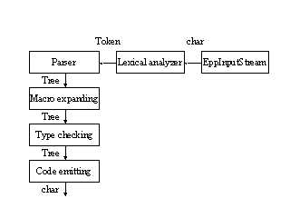

パス 再帰下降パーザ トークン リテラル 抽象構文木 非終端記号 bootstrapただし、あまり高度な専門知識は必要としません。
また、 以下のような lisp プログラマーには馴染み深い概念が出てきます。
macro, immutable object, symbol, Ｓ式, backquote macro, 動的変数これらの概念については、 できるだけ lisp の経験がない読者にもわかるように 説明するつもりです。
５つの plug-in の中で、特に重要な役割を果たしているのが、 SystemMixin plug-in です。 SystemMixin plug-in は、 Java 言語の上に、 Java 言語とは別の オブジェクト指向言語 Ld-2 を実現するものです。
| (Application Programs) |
|---|
| EPP Plug-ins |
| EPP Core / Java Grammar definition |
| Object-Oriented Language Ld-2 |
| JavaVM |
言語 Ld-2 は、 Java 言語とは違う特殊な継承機構を持っています。 これは、１つのクラスを mixin という複数の「部品」に分割して 記述できるようにする機構です。 mixin を複数組み合わせることによって、１つのクラスが構築されます。

現在の実装では、 mixin を組み合わせて作る Ld-2 class と、 普通の Java 言語の class とは互換性がなく、それぞれ異なった シンタックスで定義されます。メソッド呼び出しのシンタックスも異なっています。
jp.go.etl.epp.epp.Eppという名前の Java クラスです。 EPP main routine は、処理すべきファイル１つずつに対して、 異なったコンフィギュレーションの EPP プリプロセッサを構築し、 それを起動します。
EPP プリプロセッサは、 複数の mixin をつなぎ合わせ作られる、１つの Ld-2 クラスです。 ファイルの先頭で指定された plug-in の mixin と、 「標準のプリプロセッサを定義する mixin 」をすべてつなぎ合わせて １つの Ld-2 クラスにすることによって、 そのファイル専用のプリプロセッサが構築されます。
plug-in によって拡張できるのは、 EPP プリプロセッサの挙動だけで、 EPP main routine の挙動は拡張できません。 しかし、 Java クラス jp.go.etl.epp.epp.Epp のサブクラスを作ることで、 カスタマイズされた EPP main routine を作ることはできます。
EPP はデフォルトではファイル単位で変換処理を行ないますが、 -global オプションとともに起動された場合は、 グローバル処理モードとなり、 全ファイルを対象とする 大域的な処理が可能となります。

構文解析パスは、随時 字句解析ルーチン を呼び出します。 字句解析ルーチンは、 EPP 用の入力ストリームであるクラス EppInputStream から１文字ずつ文字を読み込みます。
plug-in は、 EppInputStream、字句解析ルーチン、構文解析パス、 マクロ展開パス、型チェックパス、コード出力パスのすべてを 拡張することができます。
また、４つのパスの前後に 新たなパスを追加することができます。 その方法については、 EPP プリプロセッサのコアの 項目で説明しています。

トークンは、字句解析ルーチンが返すデータ型です。
抽象構文木は、構文解析パスによって作られ、マクロ展開パス、型チェックパスで 変換処理されてコード出力パスに渡され、そこで文字列に変換されて 出力ファイルに出力されます。
抽象構文木のノードには、型情報の付いたノードと、付いていないノードがあります。 型チェックパスでは、型情報の付いていない抽象構文木を 型情報付き抽象構文木に変換します。
これら３つのデータ型はいずれも immutable object です。 プログラム中から、内部状態を変更することはできません。
plug-in は、トークンや抽象構文木を表すクラスのサブクラスを 定義することはできません。 新しいサブクラスを追加しなくても、 最初から新しいトークン、新しい構文が表現できるような、 汎用性の高いデータ構造になっています。
詳しくはこの論文を見て下さい。
「高いモジュラリティと拡張性を持つ構文解析器」
Epp.java EPP main routine の定義 EppCore.java EPP プリプロセッサの本体 EppInputStream.java EPP 用入力ストリーム Lex.java 字句解析ルーチン CompUnit.java Java プログラムのトップレベルの文法定義 TypeDecl.java class, interface, method, field の文法定義 Statement.java 文の文法定義 ExpNonTerm.java 式に関係する non-terminal の定義 Exp.java 式の文法定義 TypeSystem.java クラス Type の定義および型に関する意味の定義 TypeCheck.java 標準の Java の型チェックオブジェクトの定義 FileSig.java クラス型の定義と分割コンパイル処理の定義